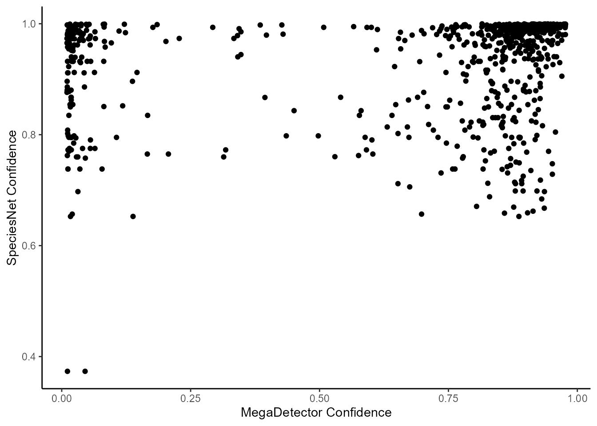
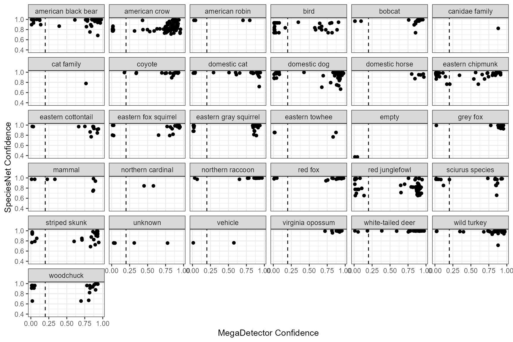
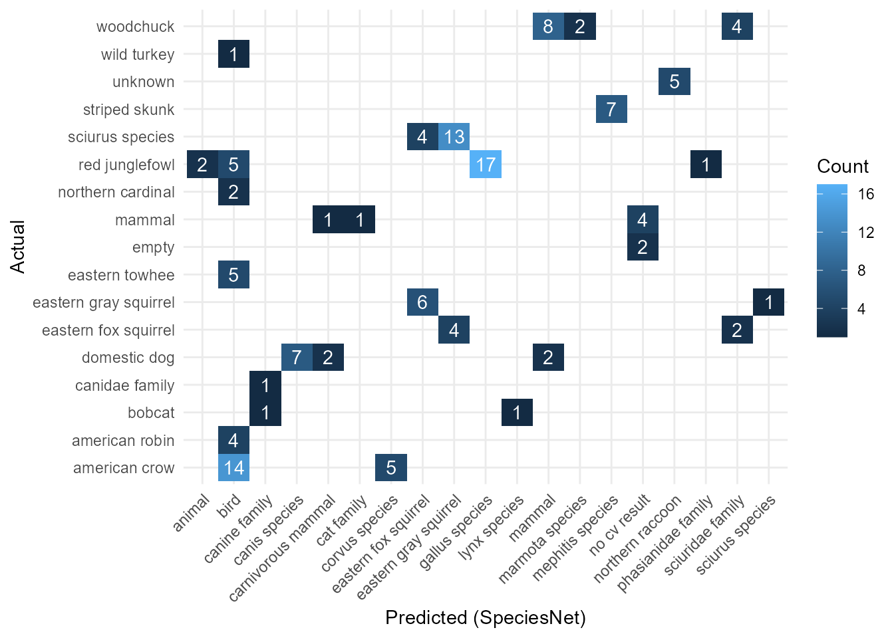

Analyze the Efficacy of SpeciesNet/MegaDetector on Your Dataset
analyze-specnet-efficacy.Rmd
library(camRa)
library(stringr)
library(dplyr)
#>
#> Attaching package: 'dplyr'
#> The following objects are masked from 'package:stats':
#>
#> filter, lag
#> The following objects are masked from 'package:base':
#>
#> intersect, setdiff, setequal, union
library(ggplot2)SpeciesNet is a relatively new image classification model that is most often used as an extension to MegaDetector. SpeciesNet assigns a taxonomic ID to each detection by MegaDetector within reason (there are some controls for minimum confidence and such). In tests of SpeciesNet, it seems really good at ID for some species, but pretty bad with others. On top of that, there will always be some site-to-site variation. This is especially true if your cameras are located in environments not well represented in SpeciesNet’s training data or if you’re seeing some rare species. For this reason, it can be good practice to take a look at how well SpeciesNet is doing on your specific data. In this vignette, I’ve used the ena24detection subset dataset to explore SpeciesNet data.
| file | datetime | species | species_count |
|---|---|---|---|
| 6801.jpg | 2026-06-19 00:13:03 | domestic cat | 1 |
| 9674.jpg | 2026-06-19 00:13:03 | american black bear | 1 |
| 3015.jpg | 2026-06-19 00:13:03 | striped skunk | 1 |
| 7348.jpg | 2026-06-19 00:13:03 | coyote | 1 |
| 3748.jpg | 2026-06-19 00:13:03 | northern raccoon | 1 |
| 6955.jpg | 2026-06-19 00:13:03 | domestic dog | 1 |
Format and Clean the Data
The first thing we’ll do is filter out images with multiple species present. This is done for two reasons. First, it’s really difficult to do any analyses that use the bounding box data when there are multiple species in one image: which bounding box goes with which? Second, SpeciesNet will actually assign the same ID and confidence to all boxes in the image, so you’ll never get good results with these images. This happens because SpeciesNet is usually set up to only look at the highest confidence detection, then assigns whatever it thinks that box contains to all the boxes in the image. For an example of this, the image “9487.jpg” in the ena24detection subset contains two cottontail rabbits and an american crow. All three are very easily visible and if the crow were the only thing in the image, it probably would’ve been detected as either a crow or bird. Here, one of the cottontails happened to have higher confidence in MegaDetector so that’s what SpeciesNet used.
#Filter on if ; (seperator) is in species
id_data <- ena24detection_subset[
stringr::str_detect(ena24detection_subset$species, ";", negate = TRUE),
]
paste0("New dataset has ", nrow(ena24detection_subset) - nrow(id_data), " fewer records.") |>
print()
#> [1] "New dataset has 19 fewer records."Next, get the SpeciesNet JSON file and flatten it to a table using
megadet_flatten(). This dataset has many pictures of
chickens, which SpeciesNet assigns typically as red junglefowl and more
rarely as domestic chicken. I want to look at what was IDed wrong later
on and since these are really the same category, I’ll be changing
chicken records to be the same value.
#Get file path for JSON data
json_file <- system.file(
"extdata",
"ena24subset_SpecNet_recognition.json",
package = "camRa"
)
#Flatten to table
specnet_data <- camRa::megadet_flatten(json_file)
#Update "domestic chicken" to be "red junglefowl"
specnet_data$classification_category[
specnet_data$classification_category == "domestic chicken"
] <- "red junglefowl"Now merge the two dataframes. This gives us a table that has what
SpeciesNet said and what the actual ID was. Each row here will be a
bounding box like in specnet_data. The IDs here are the
same as what SpeciesNet would use for the same species, so we don’t need
to do anything here to update those values.
Explore the Data
The first thing I want to do is see if there’s a relationship between SpeciesNet and MegaDetector confidence values.
In this graph, you’ll see that SpeciesNet tends to have high values, while MegaDetector is a bit all over the place, but clusters at very low and very high values for this dataset. SpeciesNet mainly giving high values is a known phenomenon and this is in some way build into the model. MegaDetector tends to have a lot more variance in it’s values but does still cluster when tested in other datasets.
ggplot(species_data, aes(x = detection_conf, y = classification_conf)) +
geom_point() +
theme_classic() +
labs(x = "MegaDetector Confidence", y = "SpeciesNet Confidence")
Next, I want to see if confidence is related to species and if you’re missing out on a lot by setting certain confidence thresholds. For this we’re going to plot things by the actual ID given to the image, so this is a measure of the actual animal in the image.
For SpeciesNet, confidence is, of course, always high, but the two lowest confidence values belong to images that were empty, so that’s actually pretty good. With more empties included, you may see that they consistently have lower confidence which would be ideal.
For MegaDetector, there is more concern about cutoffs. You can see that most species have detections below 0.2 confidence which is the cutoff currently suggested for model version 5a if you want to use MegaDetector to remove empty images. For some species, this loss might not really matter, like white-tailed deer which in the eastern U.S. is incredibly abundant and the few images we lose here using >0.2 likely wouldn’t matter for wildlife activity metrics. On the other hand, MegaDetector struggles on chipmunks which are also relatively common across a lot of the same area.
If you’re mainly interested in a specific species, the distribution here is good to consider. If bobcats are a species of interest for your project, is the loss here of two bobcat images out of 25 acceptable? Or is it a risk you can’t take? Is a 8.6% (23 vs. 25) increase in bobcat images worth reviewing all images, especially with MegaDetector clustering values near 0 confidence?
ggplot(species_data, aes(x = detection_conf, y = classification_conf)) +
geom_point() +
theme_bw() +
facet_wrap(~species) +
geom_vline(xintercept = 0.2, linetype = "dashed") +
labs(x = "MegaDetector Confidence", y = "SpeciesNet Confidence")
Finally, I want to know what SpeciesNet is getting wrong. For this, I’m going to use a modified confusion matrix. Due to the large number of taxonomic categories in both SpeciesNet and the actual IDs, the modified plot just shows taxons that had some kind of mismatch and removes matches.
Some of the IDs here are almost correct, like saying bird for species that can be identified or mephitis species for striped skunks. Overall, you can see a decent amount of confusion within squirrels—both for cases where the model has classified it too highly (says fox squirrel but it can’t be determined) and where it has said sciurus species or sciuridae when it can be identified as a higher taxon.
In this dataset, there were no clear mis-identifications, which is good but also expected with most cameras being placed in areas where wildlife will end up near the camera (by buildings, facing a wall) rather than being far away which can make identification for SpeciesNet worse.
#Create matrix
confusion_matrix <- table(
Predicted = species_data$classification_category,
Actual = species_data$species
) |> data.frame()
#Fix factor columns
confusion_matrix$Predicted <- as.character(confusion_matrix$Predicted)
confusion_matrix$Actual <- as.character(confusion_matrix$Actual)
#Filter to only non-zeros for
confusion_matrix <- dplyr::filter(confusion_matrix, Freq > 0 & Predicted != Actual)
ggplot(data = confusion_matrix, aes(x = Predicted, y = Actual, fill = Freq)) +
geom_tile() +
geom_text(aes(label = Freq), color = "white") +
theme_minimal() +
theme(axis.text.x = element_text(angle = 45, vjust = 1, hjust = 1)) +
labs(x = "Predicted (SpeciesNet)", y = "Actual", fill = "Count")